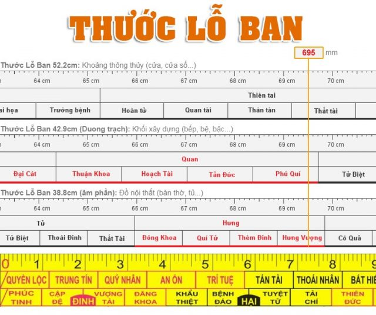
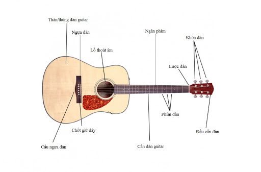

Thước lỗ ban là một trong những vật dụng không thể thiếu trong ngành xây dựng và thiết kế nội thất. Với những yếu tố phong thủy được ghi chú cẩn thận và tỉ mỉ, loại thước này giúp cho các kỹ sư cũng như thợ thi công thực hiện được công trình, sản phẩm dễ dàng và hợp phong thủy. Vậy chính xác gì thước lỗ ban là gì? Nguồn gốc của thước từ đâu? Làm thế nào để sử dụng thước chính xác nhất? Đừng bỏ qua những thông tin dưới đây nhé!
Nguồn gốc của thước lỗ ban
Cái tên lỗ ban thực chất là tên của một bậc thầy về phong thủy. Ông tên là Lỗ Ban, sống ở Thời Xuân Thu của Trung Quốc. Ông cũng chính là ông tổ của nghề mộc.
Lỗ Ban là người nước Lỗ, tên thật của ông là Công Du Ban (hay Công Du Tử). Có câu chuyện kể lại rằng ngày 7 tháng 5 năm 507 Trước Công Nguyên, vào buổi chiều hôm đó Lỗ Ban được sinh và kéo theo hiện tượng kỳ lạ là những con sếu tụ tập lại đồng thời hương thơm lan tỏa ở ngôi nhà đó. Người dân trong vùng biết đây là điềm lành, báo hiệu về một vị Thần chuyển sinh giáng thế.
Thời Lỗ Ban còn trẻ, thay vì học đọc và viết như những học trò khác thì Lỗ Ban lại quan tâm đến các nghề thủ công mỹ nghệ. Năm 15 tuổi, ông đã theo học thầy Đoan Mộc. Sau khi tinh thông, ông đi nhiều nước và đề xuất mọi người phải tôn trọng nước Chu nhưng không ai nghe. Do đó, Lỗ Ban lui về ẩn dật ở phía nam của núi Đái Sơn.
Mười ba năm sau, Lỗ Ban tình cờ ra khỏi núi và gặp Cựu Bao và nhận Cựu Bao làm thầy. Ông học điêu khắc và học vẽ từ thầy Cựu Bao. Với tinh thần cầu tiến và ham học hỏi, mong mỏi thay đổi văn hóa Trung Quốc, Lỗ Ban đã tinh thông rất nhiều kỹ năng như điêu khắc, làm mộc, chạm đá,… Đồng thời, ông cũng đã dạy nhiều học trò và sáng tạo ra nhiều công cụ làm thay đổi quan niệm thủ công sau này, một trong số đó chính là thước lỗ ban.

Thước lỗ ban có nguồn gốc từ Trung Quốc, lấy theo tên của bậc thầy phong thủy Lỗ Ban
Trong cuộc đời sự nghiệp của mình, Lỗ Ban cũng đã từng làm chức quan trọng bộ xây dựng. Ông được học trò nhiều nơi tìm đến học hỏi và trở thành kỹ sư xây dựng nổi tiếng trong lịch sử Trung Quốc.
Cấu tạo và ý nghĩa của thước lỗ ban
Thực tế không chỉ có “Lỗ Ban xích” là được sử dụng trong ngành xây dựng và nội thất, các loại thước khác như thước Áp Bạch, thước Đinh Lan cũng được sử dụng tuy không nổi tiếng bằng.
Cấu tạo của thước lỗ ban do Lỗ Ban sáng tạo ra ban đầu chỉ là một đoạn dài 42.9 cm. Trên đó có những vạch phân định ra khoảng cách tốt – xấu dựa trên kinh nghiệm sử dụng và kiến thức phong thủy của thầy Lỗ Ban. Từ nghiên cứu về mối quan hệ giữa con người và vạn vật, Lỗ Ban đã phân chia thước thành những khoảng biểu thị sự sinh tồn, phát triển, suy thoái của đời sống con người. Để dễ hiểu, mỗi thước lỗ ban có đơn vị và “thước”, ký hiệu một thước là L. Mỗi (L) bao gồm 8 cung bát quái và mỗi cung lại có ký hiệu, chữ viết cho thấy vận mệnh của con người khi sống trong không gian đó.
Ngoài ra lý giải khoa học về thước lỗ ban 52.2mm (đo kích thước rỗng) người ta cho rằng các phòng giống như các hộp rỗng, khi sóng âm đi qua các lỗ cửa có kích thước khác nhau sẽ tạo ra các bước sóng khác nhau và tác động trực tiếp đến con người cũng sẽ khác nhau. Lấy ví dụ như này cho dễ hiểu: căn phòng ví như thùng đàn gitar; còn các cửa đi cửa sổ giống như lỗ thoát âm của đàn. Thùng đàn guitar có tác dụng cộng hưởng, khuếch đại âm thanh, kích thước thùng đàn và lỗ thoát âm sẽ có tỷ lệ găn bó với nhau nếu thay đổi kích thước thùng đàn hoặc lỗ thoát âm sẽ cho ra âm thanh khác nhau hay hoạc không hay. Như vậy kích thước phòng hay kích thước cửa sẽ có một mối liên kết tỷ lệ với nhau người ta gọi là kích thước Lỗ Ban

Khoa học phương đông là khoa học thực nghiệm (đúc rút kinh nghiệm qua nhiều năm nhiều thế hệ) các con số của thước Lỗ Ban cũng chỉ là dựa theo kinh nghiệm và các thử nghiệm của người tạo ra nó, Chính vì thế nếu bạn hỏi Bầu Trời Xanh cơ sở khoa học về các con số của thước Lỗ Ban thì Bầu Trời Xanh cũng không lý giải được.
Ngày nay, vì thước lỗ ban nguyên thủy quá ngắn dễ dẫn đến sai sót nên người ta sản xuất ra thước có kích thước dài hơn. Tuy nhiên, ý nghĩa của thước vẫn không thay đổi. Để xây dựng một ngôi nhà hợp tuổi, hợp mệnh và đúng hướng vẫn chưa đủ mà còn phải có kích thước, thông số đúng phong thủy. Vì thế, cần phải sử dụng đến “Lỗ Ban xích” để xây nhà đúng kích thước phong thủy, cửa ra vào, cửa sổ không chạm phải cung xấu. Tương tự, một sản phẩm nội thất cũng cần phải có kích thước chuẩn theo thước lỗ ban để tránh phạm phải cung xấu, kiêng kỵ, tránh được tai họa.
Các loại thước lỗ ban
Hiện nay, “Lỗ Ban xích” có ba phiên bản được dùng với mục đích khác nhau như:
– Thước Lỗ Ban 52.2cm: Dùng để đo khoảng thông thủy (cửa, cửa sổ…)
– Thước Lỗ Ban 42.9cm (đo Dương trạch): Khối xây dựng (bếp, bệ, bậc thang, cầu thang,…)
– Thước Lỗ Ban 38.8cm (đo Âm phần): Mồ mả, nội thất (bàn thờ, tủ thờ,…)

Thước lỗ ban có 3 loại dùng để đo âm phần, dương trạch và thông thủy
Ba loại thước này không được dùng lẫn lộn với nhau. Đồng thời, cần phải biết cách đọc chính xác để tránh gặp phải cung xấu.
Cách đo thước lỗ ban chuẩn theo phong thủy
Để giúp các bạn hiểu rõ hơn về tác dụng của loại thước này cũng như cách sử dụng chính xác nhất, sau đây chính là hướng dẫn cách đo bằng thước lỗ ban. Trên một thước sẽ bao gồm nhiều vạch đỏ, mỗi vạch thuộc một cung và mang ý nghĩa tốt xấu khác nhau. Ví dụ như cung đăng khoa, nạp phúc,… là cung tốt, ngược lại tự tuyệt, thất thoát là cung xấu.
Khi xây dựng nhà cửa, chế tác nội thất, người thi công sẽ dựa vào thước để biết được cung nào xấu mà tránh đi. Tuy vậy, dù là cung tốt cũng cần được sử dụng hợp lý chứ không thể dùng tràn lan. Ví dụ như xây nhà ở thì dùng các cung như: hỉ sự (ý nghĩa vui mừng), hút tinh (phúc đến), lục hạp (hòa thuận),… Xây công ty thì dùng cung: đăng khoa (lên chức), đại cát (tốt lành), thuận khoa (thuận lợi),… Cửa hàng ăn uống thì dùng: đại cát, thêm đinh (thêm người),… Những gia đình neo con, ít người có thể dùng phòng ngủ có cung: hút tinh (phúc đến), thêm đinh (thêm người), thiên đức (đức trời), nạp phúc (được phúc),…
Ngoài ra, còn có nhiều cung tốt nữa, chỉ cần dùng đúng cách thì bạn sẽ có được cuộc sống sung túc, thuận lợi. Có thể kết hợp thêm một số vật phẩm phong thủy thể tăng tính hiệu quả cho không gian sống. Ngược lại nếu đang gặp vấn đề trong cuộc sống thì bạn cũng nên xem lại các phần mộ, âm trạch, dương trạch, kích thước thông thủy xem đã đúng hay chưa.
Cụ thể cách dùng các loại thước lỗ ban như sau:
Thước lỗ ban 52.2: Đo kích thước rỗng (Thông Thuỷ)
Thước này dùng để đo các lỗ rỗng trong nhà như khoảng thông thủy của cửa chính cửa phụ, cửa sổ, các lỗ thoáng, không gian giữa các tầng nhà,… kích thước rỗng này nằm trong không gian nhà ở giới hạn, vì thế nó ảnh hưởng trực tiếp đến con người.
Một thước đo thông thủy có chiều dài được quy đổi thành: L = 0,52 mét. Mỗi mét có số đo là 0,065 m. Thước bao gồm 8 cung: Quý nhân – Hiểm hoạ – Thiên tai – Thiên tài – Phúc lộc – Cô độc – Thiên tặc – Tể tướng. Trong đó:
– Cung Quý nhân mang ý nghĩa làm ăn phát đạt, bạn bè trung thành với nhau, gia cảnh tốt, con cái hiếu thảo, thông minh. Cách tính cung quý nhân là: n x L + (0,15 đến 0,065)
– Cung hiểm họa mang ý nghĩa trôi dạt tha hương, gia đình bị tán tài tán lộc, cuộc sống rơi vào túng thiếu, con cái mất nết, bất hiếu bất trung, gia đình có người hay đau ốm,… Cách tính cung hiểm họa: n x L + (0,07 đến 0,13).
– Cung thiên tai thước lỗ ban có ý nghĩa dễ gặp ốm đau, chết chóc, bệnh tật quấn thân, mất tiền của, vợ chồng bất hòa, con gái dễ gặp nạn,… Cách tính cung thiên tai: n x L + (0,135 đến 0,195)
– Cung thiên tài mang ý nghĩa may mắn tài lộc, con cái hiếu thảo, gia đọa an vui, sống thọ, năng tài đắc lợi. Cách tính cung thiên tài: n x L + (0,20 đến 0,26)
– Cung phúc lộc giúp gia chủ gặp được phúc lộc, sung túc, nghề nghiệp phát triển, con cái thông minh, hiếu học, năng tài đắc lợi, gia đạo an ấm, yên vui. Cách tính cung phúc lộc: n x L + (0,265 đến 0,325)
– Cung cô độc cho thấy gia chủ sẽ biệt ly, hao tài, hao của, hao người, con cái ngỗ nghịch, tửu sắc vô độ và chết. Cách tính cung cô độc: n x L + (0,33 đến 0,39)
– Cung thiên tặc phải cẩn thận gặp bệnh bất ngờ, tai bay vạ gió, tù ngục, kiện tụng, chết chóc,… Cách tính cung thiên tặc n x L + (0,395 đến 0,455).
– Cung tể tướng biểu thị ý nghĩa gia đạo hanh thông về mọi mặt, may mắn bất ngờ, con cái tấn tài, có công danh sự nghiệp, sinh con quý tử. Cách tính cung tể tướng n x L + (0,46 đến 0,52)
Lưu ý các chỉ số:
+ n = 0; 1; 2; 3; 4; 5; 6; 7; 8; 9; 10; …
+ L = 0,52 mét
+ Cung tốt bao gồm cung: Quý nhân – Thiên tài – Phúc lộc – Tể tướng
+ Khoảng cách thông thủy là khoảng cách mà dòng nước có thể chảy qua được, không bị cản trở hay bị thay đổi dòng. Ví dụ muốn tính khoảng thông thủy của cửa chính, người ta sẽ căn cứ vào khoảng trống giữa hai bên của khuôn cửa và từ khung trên của cửa đến mặt sàn nhà để tính chiều rộng, chiều dài. Hay để xây dựng nhà và xác định chiều cao thông thủy của một phòng thì người ta sẽ căn cứ vào chiều cao từ mặt sàn đến dầm hoặc trần (nếu không có dầm), chiều rộng thông thủy căn cứ vào khoảng cách giữa các mép tường đối hiện hoặc khoảng giữa hai cột.
Thước lỗ ban 42.9: Đo kích thước đặc (Dương trạch)
Thước này dùng để đo kích thước phủ bì của một vật thể nhất định. Ví dụ như tường nhà, nội thất,… Thước có 8 cung bao gồm: Tài – Bệnh – Ly – Nghĩa – Quan – Kiếp – Hại – Bản
– Cung tài nghĩa là tài đức (có tài có đức), báo khố (có kho quý), nghênh phúc (đón được những điều phúc) và đạt được 6 điều ưng ý.
– Cung bệnh nghĩa là cát bệnh tật như: thoát tài (mất tiền), cô quả (cô đơn lẻ bóng), công sự (bị đưa đến cửa quan), lao chấp (gặp phải tù đày).
– Cung ly nghĩa là xa cách gồm: thất thoát (mất mát), trưởng khố (phải cầm cố đồ đạc), Quan quỷ (công việc kém cỏi), kiếp tài (của cải mắc tài)
– Cung nghĩa mang ý nghĩa đạt được điều hay lẽ phải, ý nghĩa tốt là thêm đinh (thêm người), quý tử (sinh con quý tử), đại cát (gặp nhiều điều hay), ích lợi (có lợi ích).
– Cung quan bao gồm: thuận khoa (công danh thăng tiến), hoành tài (nhiều tiền), tiến ích (ích lợi tăng lên), phú quý (giàu sang)
– Cung kiếp dễ gặp tai nạn như tử biệt (chết chóc), ly hương (bỏ quê bỏ nhà đi xa), thoái khẩu (mất người), tài thất (mất tiền).
– Cung hại nghĩa là gặp phải những việc xấu như tai chi (tai nạn), tử tuyệt (chết chóc), khẩu thiệt (cãi nhau), bệnh lâm (mặc bệnh).
– Cung bản nghĩa là gốc gồm các yếu tố tài chí (tiền tài đến), hưng vượng ( làm ăn phát đạt), đăng khoa (đỗ đạt), tiến bảo (được dâng của quý)
Lưu ý:
4 cung tốt của Thước lỗ ban 42.9 là Tài – Nghĩa – Quan – Bản
Khi đo đạc kích thước, người ta dùng hai loại thước: Thước có chiều dài mỗi cung 53,62 mm dùng để đo nhà còn thước có chiều dài mỗi cung 48,75 mm dùng để đo đồ nội thất.
Đối với tính kích thước nhà, thì các cung được tính như sau:
– Tài : n x L + (0,010 đến 0,053)
– Bệnh : n x L + (0,055 đến 0,107)
– Ly : n x L + (0,110 đến 0,160)
– Nghĩa : n x L + (0,162 đến 0,214)
– Quan : n x L + (0,216 đến 0,268)
– Kiếp : n x L + (0,270 đến 0,321)
– Hại : n x L + (0,323 đến 0,375)
– Bản : n x L + (0,377 đến 0,429)
+ n = 1; 2; 3; 4; 5; 6; 7; 8; 9; 10 …
+ L = 0,429 m
Thước lỗ ban 38.8: Đo đồ vật trong âm trạch, đồ nội thất
Thước có 10 cung, trong đó có 6 cung tốt và 4 cung xấu. Cung tốt ký hiệu màu đỏ và cung xấu màu đen.
– Cung đinh (con trai) gồm phúc tinh (sao phúc), đăng khoa (thi dỗ), tài vượng (tiền của đến), đỗ dạt (thi cử thành công).
– Cung hại gồm họa chí (tai họa bất ngờ), khẩu thiệt (mang họa vì lời nói), tử tuyệt (đoạn tuyệt con cháu), lâm bệnh (bị mắc bệnh).
– Cung vượng gồm hỷ sự (chuyện vui đến), tiến bảo (tiền của đến), thiên đức (đức của trời), thêm phúc (phúc lộc dồi dào).
– Cung khổ gồm thất thoát (mất của), kiếp tài (bị cướp của), quan quỷ (tranh chấp, kiện tụng), vô tự (không có con nối dõi)
– Cung nghĩa gồm đại cát (tốt lành), lợi ích (có lợi ích), thiên khố (kho báu trời cho), tài vượng (tiền của nhiều).
– Cung quan gồm phú quý (giàu có), tài lộc (nhiều tiền của), thuận khoa (thi đỗ đạt), tiến bảo.
– Cung tử gồm ly hương (xa quê hương), tử biệt (có người mất), thất tài (mất tiền), thoát đinh (con trai mất)
– Cung hưng gồm đăng khoa (thi đỗ), quý tử (con ngoan), hưng vượng (giàu có), thêm đinh (thêm con cái)
– Cung thất gồm cô quả (cô đơn), công sự (lên cửa quan), thoát tài (mất tiền), lao chấp (tù đày).
– Cung tài gồm nghinh phúc (phúc đến), lục hợp (6 hướng tốt),tiến bảo, tài đức (có tiền đức).
Cách tính các cung thước lỗ ban 38.8:
– Tài : n x L + (0,010 đến 0,048)
– Bệnh : n x L + (0,050 đến 0,097)
– Ly : n x L + (0,100 đến 0,146)
– Nghĩa : n x L + (0,150 đến 0,195)
– Quan : n x L + (0,200 đến 0,240)
– Kiếp : n x L + (0,245 đến 0,290)
– Hại : n x L + (0,295 đến 0,340)
– Bản : n x L + (0,345 đến 0,390)
Lưu ý:
+ n = 1; 2; 3; 4; 5; 6; 7; 8; 9; 10 …
+ L = 0,388 m